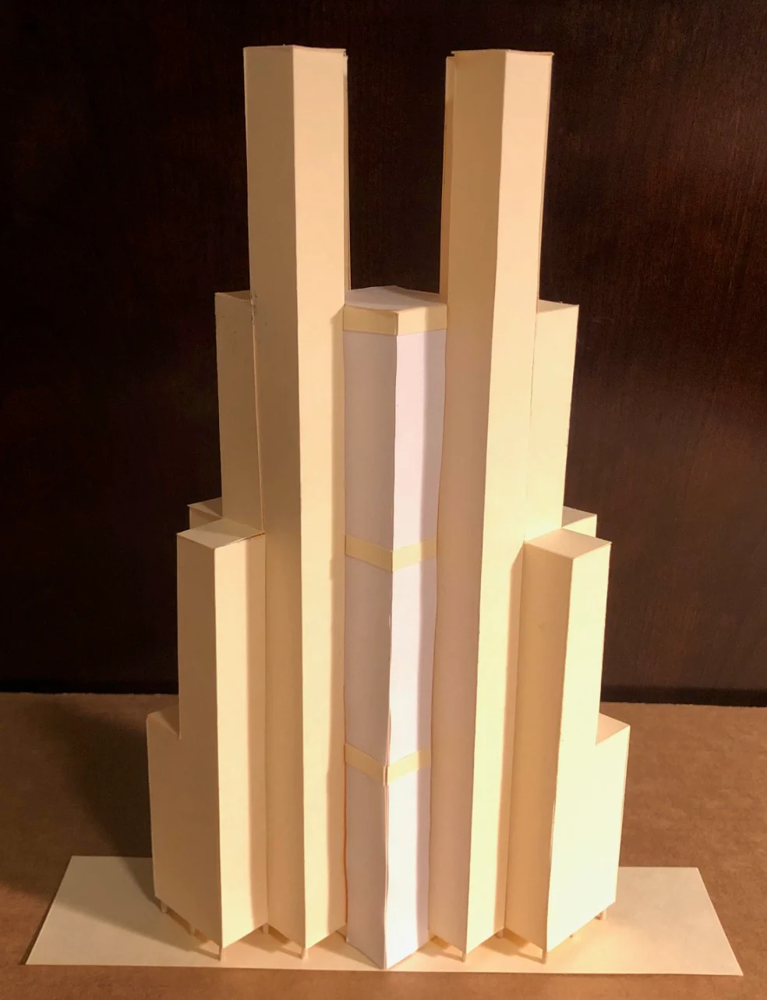
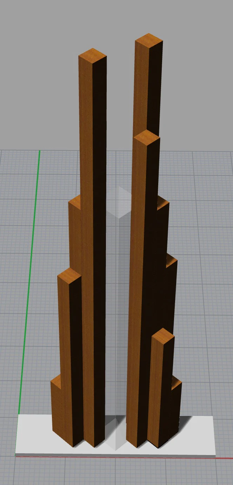

Skyscraper


This is an original design for a skyscraper located in San Francisco next to the Justin Herman Plaza. It is 1000' tall and consists of two towers constructed using a bundled tube design, similar to Sears Tower in Chicago. My skyscraper also includes an atrium in between the towers, which is 670 feet tall, surpassing the atrium height of the Leeza SOHO skyscraper which previously held the record at 636 feet. I also make use of pilotis to open up the area underneath the building. This strategy was inspired by Le Corbusier's Villa Savoye building in France.
- Medium
- Model — 2-ply, balsa wood, foam core, foliage, acetate, string lights, tacky glue. Floor plans — CAD graphics. Process sketches — tracing paper.
- Dimensions
- Model — 3" × 10" × 18". Process sketch pages — 11" × 8.5".
Design process
Exploratory sketches, paper and digital massing studies, and construction of the final model.



